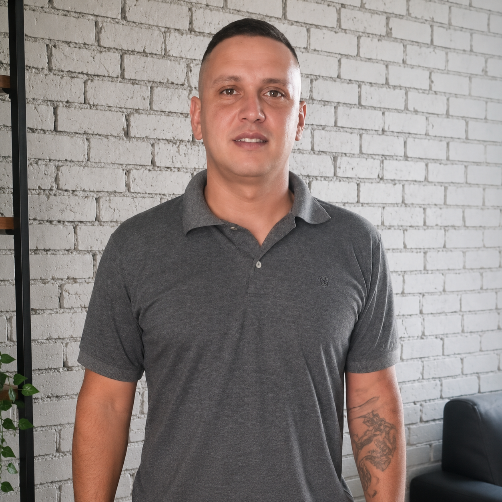

Técnico Mobile & Estudante de ADS
Fernando Vinícius
Técnico especialista em sistemas móveis e estudante de ADS (3º Semestre). Minha trajetória une 10 anos de bancada, dominando desde o bypass de segurança em firmwares até a recuperação crítica de hardwares, com a automação de processos usando Python e Typebot. Estou em constante evolução, explorando a intersecção entre Segurança da Informação, Front-end e o desenvolvimento de soluções que resolvem problemas reais de lojas e usuários.

Segurança & Mobile
- • Bypass de Segurança (FRP/Account)
- • Recuperação de Firmware
- • Auditoria de Integridade
- • Diagnóstico Avançado de Hardware
Automação & Lógica
- • Scripting em Python (Automação)
- • Fluxos de Atendimento (Typebot)
- • Integração de APIs
- • Lógica de Algoritmos
Front-end & Web
- • HTML5, CSS3, JavaScript
- • Tailwind CSS (UI/UX)
- • Deploy e Git/GitHub
- • Portfólio Web
Projetos em Destaque

Solucell SP
Site Comercial & UX
Plataforma institucional e comercial desenvolvida para otimizar a jornada do cliente e conversão de serviços premium de assistência técnica.
Acessar SiteAutomação Typebot
Bot de Atendimento
Bot inteligente para atendimento automatizado em loja física. Automatiza consulta de preços de peças e telas via fluxos inteligentes.

Interface Interativa
Estudo de Front-end
Projeto focado em manipulação avançada de DOM e eventos JS, explorando estados de interface e lógica de interatividade.